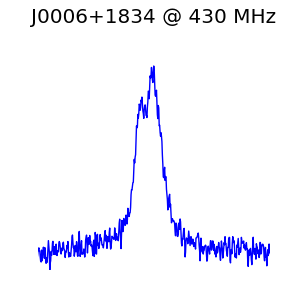
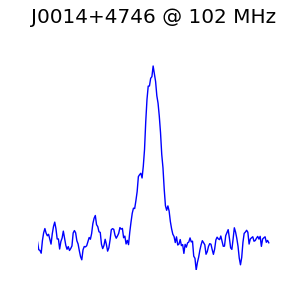
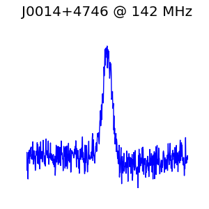
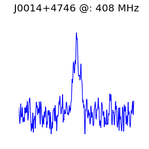

A listing of all the test vectors currently available.
All the test vectors (4) available for download are listed here. If you need a different vector, please get in touch with me via . All the test vectors summarised below are also described in a separate test vector database CSV file. You can get that file here. The file format is described at the bottom of the page.
Each test vector in the table below can be recreated using the Test Vector docker environment. The code used to generate that environment (and this site) can be found here. Note that each vector is associated with a batch number. You can find the exact processing steps applied to a test vector, by clicking on the batch number. The images in the EPN Template table column, show the shape of the pulse profile inserted into each test vector. Descriptions of the columns in the table are provided at the bottom of the page. The test vector generation procedure is summarised in the Appendices of the SKA CSP Pulsar Search Sub-element Detailed Design Document (ED-4a). A PDF version of the relevant Appendix is available here.
| Type | Batch | Period (ms) | DM | Accel. | S/N | EPN Template | EPN Freq. (MHz) | File | Size GB | MD5 Hash | Size Bits |
|---|---|---|---|---|---|---|---|---|---|---|---|
| FakePulsar | 1 | 0.1 | 10 | 0.0 | 15 |  J0006+1834_430 | 430 | FakePulsar_1_0.1_10_0.0_15_J0006+1834_430.fil | 1e-09 | c4ca4238a0b923820dcc509a6f75849b | 8 |
| FakePulsar | 1 | 0.2 | 10 | +1.1 | 15 |  J0014+4746_102 | 102 | FakePulsar_1_0.2_10_+1.1_15_J0014+4746_102.fil | 1e-09 | c81e728d9d4c2f636f067f89cc14862c | 8 |
| FakePulsar | 1 | 0.2 | 10 | +1.1 | 15 |  J0014+4746_142 | 142 | FakePulsar_1_0.2_10_+1.1_15_J0014+4746_142.fil | 1e-09 | c81e728d9d4c2f636f067f89cc14862c | 8 |
| FakePulsar | 1 | 0.3 | 10 | -2.2 | 15 |  J0014+4746_408 | 408 | FakePulsar_1_0.3_10_-2.2_15_J0014+4746_408.fil | 1e-09 | eccbc87e4b5ce2fe28308fd9f2a7baf3 | 8 |
Brief descriptions of what each column of the table contains.
Type - the type of test vector. A 'RealPulsar' describes a test vector with a genuine integrated pulse profile taken from the EPN database, with the correct period, DM and acceleration values that correspond to the real detection. A 'FakePulsar' describes a test vector which also has a genuine integrated pulse profile taken from the EPN database, but period, DM and acceleration values which do not correspond to the real detection. This then produces a fake pulsar example.
Batch - The batch the test vector was generated in, where the batch corresponds to a batch number. All test vectors should be associated with a batch, to ensure reproducibility.
Period (ms) - the period in milliseconds of the pulse injected into the test vector, using the inject_pulsar tool.
DM - the Dispersion Measure (DM) used by the inject_pulsar tool.
Accel. - the acceleration applied to the pulsar in the test vector.
S/N - the S/N value used by the inject_pulsar tool.
EPN Template - the EPN database file used. This file describes the integrated pulse profile of a real pulsar observed at some observing frequency.
EPN Freq. (MHz) - the frequency at which the chosen EPN database profile was observed.
File - the path to the test vector.
Size GB - the size of the test vector in Gigabytes (GB).
MD5 Hash - the MD5 hash value for the test vector. Useful for checking downloaded vectors are valid.
Size Bits - the size of the test vector in bits.
For now this is a simple CSV file.
The format is as follows:
<Filename>,<Batch>,<Type>,<Period (ms)>,<DM>,<Accel.>,<S/N>,<EPN Pulsar>,<EPN Freq.>,<Path>,<Parent Dir>,<Size Bits>,<Size GB>,<MD5>
There is no CSV header.
Description:
This is a fake batch. It contains some example information only.
Tobs: 600
Tsamp: 64
Fc: 1400
Fh: 1500
Fch1: 1300
deltav: 78
B: 200
Nchan: 1000
Nbit: 8
Seed: 1